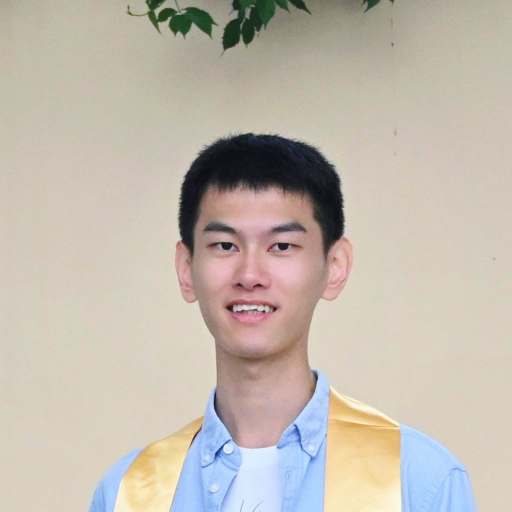

|
Tianjie Zhang 张天杰
I'm a master's student in the Machine Learning Department at Carnegie Mellon University. I received my bachelor's degree with honors in Computer Science and Technology from Zhejiang University. My interest lies in large language models and language agents. Previously, I was a research associate member at Sea AI Lab, fortunate to be advised by Longxu Dou and Min Lin. I worked on agents that interact with computers via terminal environments. From January 2024 to July 2024, I enjoyed a wonderful time at THUKEG, working with Professor Jie Tang and Yuxiao Dong on vision language model agents. During my undergraduate studies, I was also fortunate to be advised by Professor Yang Yang. I'm seeking Machine Learning Engineer internships / Research Engineer internships for the summer of 2026. Resume / LinkedIn / Github / Google Scholar / X |
 |
ExperienceFrom March 2025 to August 2025, I was a research associate member at Sea AI Lab, advised by Longxu Dou and Min Lin. We work on large language model agents that interact with computers through terminal interfaces, with my primary focus on agent scaffolding, training data collection and benchmarking.
From January 2024 to July 2024, I was a research intern at THUKEG, collaborating closely with Xiao Liu and Yu Gu, under the supervision of Professor Jie Tang and Yuxiao Dong. We released VisualAgentBench, a systematic benchmark to evaluate and develop vision language models as visual foundation agents. It has received over 50 citations and garnered
Prior to that, I worked on enhancing the graph reasoning ability of large language models with Ziwei Chai, under the supervision of Professor Yang Yang. We proposed GraphLLM, which enables large language models to solve fundamental graph reasoning tasks with near-perfect accuracy. It has received over 140 citations and garnered |
Publications / Preprints* denotes equal contribution. |


{kind=link}
{kind=link}
|
|